(Nhan danh cha...) Lạy ơn Đức Chúa Giêsu, chúng con ước ao ngắm 14 nơi thương khó Đức Chúa Giêsu trong đàng Thánh giá này, cho được kính mến trả nghĩa Đức Chúa Giêsu. Chớ gì chúng con được đến viếng những nơi thương khó ấy, như bổn đạo thành Giêrusalem cho được ăn mày các ơn bởi đàng thánh giá mà ra.
Song le chúng con là con chiên lạc xa đàng thì xin dâng lòng chúng con làm đàng thánh giá mà ngắm, cùng in vào lòng những sự thương khó Đức Chúa Giêsu đã chịu, để mà yên ủi chúng con ở chốn khách đời này, cho ngày sau được trông cậy 14 nơi thương khó ấy, như bậc thang đem chúng con về thiên đàng mà hát mừng tạ ơn Đức Chúa Giêsu đời đời chẳng cùng. Amen
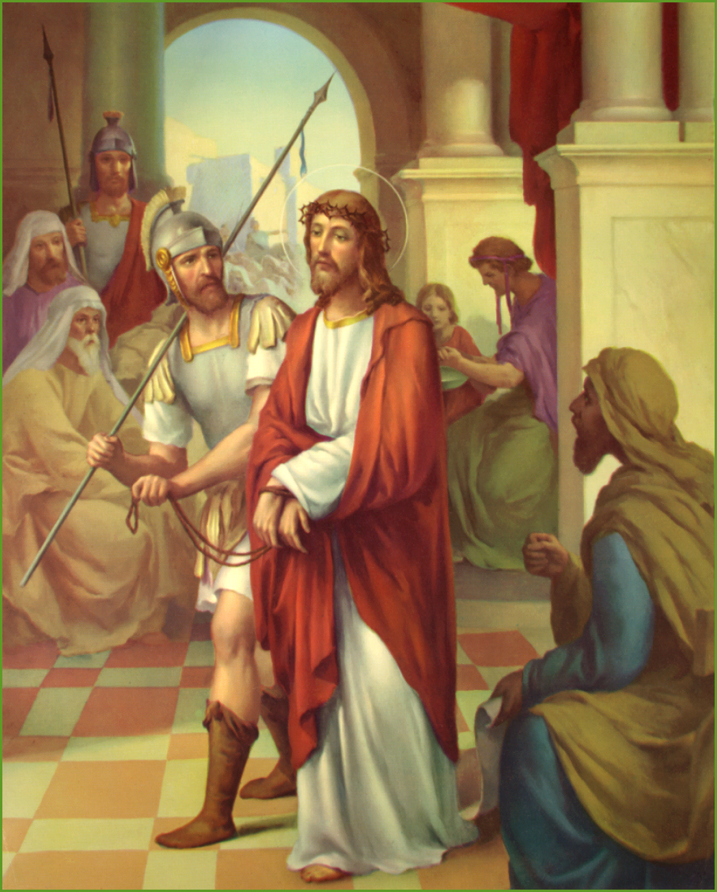Chặng Thứ Nhất:Quan Phi-la-tô luận giết Ðức Chúa Giêsu.
Lạy ơn Ðức Chúa Giêsu là Vua cả trên trời dưới đất, là Ðấng thiên hạ ước ao lâu đời, mà Philatô luận giết Chúa con cách xấu hổ nhục nhã dường ấy. Xin ban cho con ăn năn đền tội, cho đáng được Chúa con cứu lấy con nơi toà phán xét sau này.
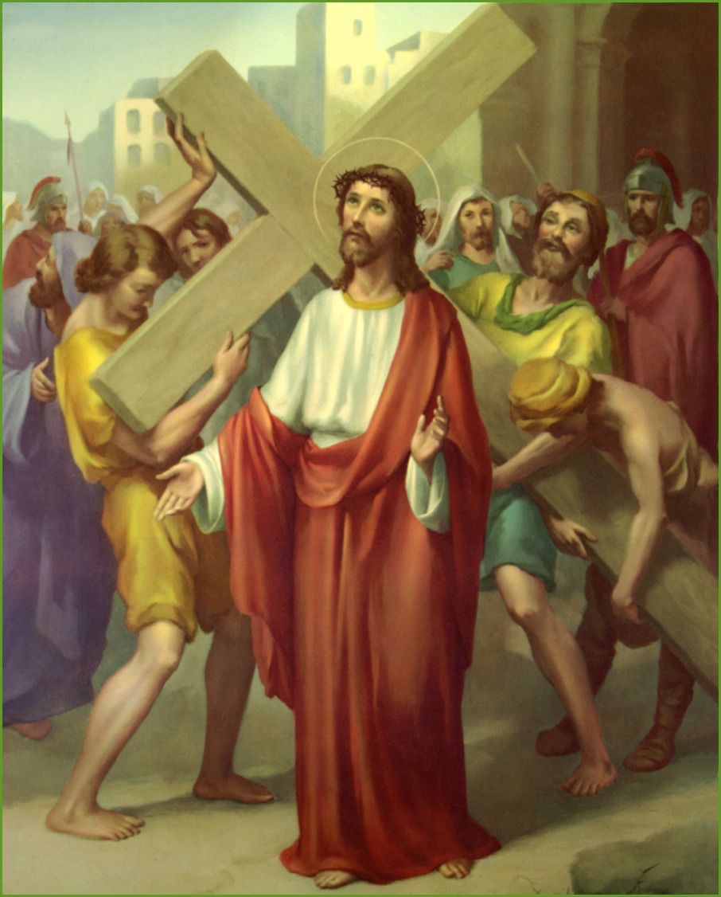Chặng Thứ Hai: Ðức Chúa Giêsu vác Thánh Giá.
Lạy ơn Ðức Chúa Giêsu chịu đánh nát cả và mình ra cùng vác Thánh Giá nặng vì tội chúng con. Xin ban ơn cho con chịu các sự khốn khó trong mức của con, như Thánh Giá Ðức Chúa Trời đã định cho con phải chịu, mà theo chân Ðức Chúa Giêsu cho trọn.
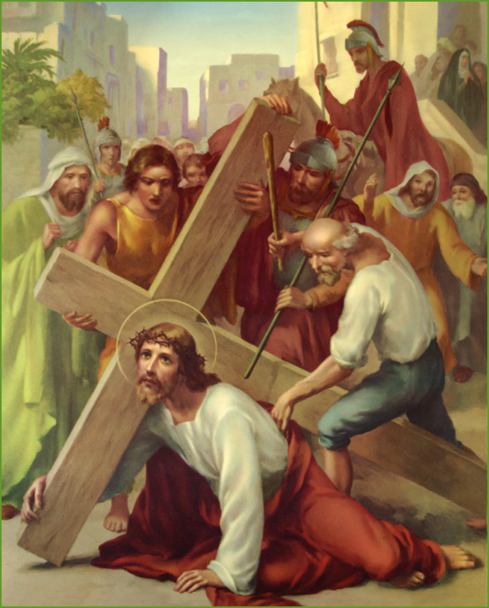Chặng Thứ Ba:Ðức Chúa Giêsu ngã xuống đất lần thứ nhất.
Lạy ơn Ðức Chúa Giêsu chịu nhiều sự khốn khó cùng nhịn đói, vác Thánh giá nặng yếu nhọc hết sức, thì ngã xuống đất. Xin ban ơn cho con giữ mình cho đến chết, chớ để con phạm tội lỗi gì mất lòng Chúa con.
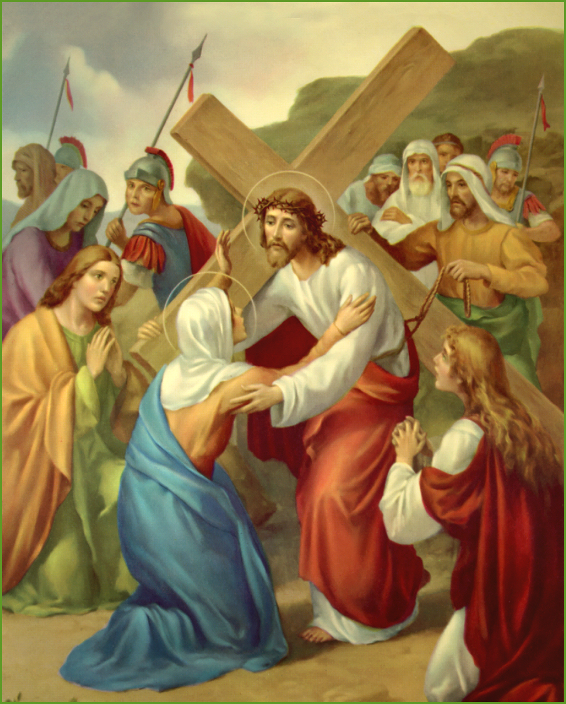Chặng Thứ Bốn:Ðức Mẹ gặp Ðức Chúa Giêsu vác Thánh Giá.
Lạy ơn Ðức Mẹ, khi trước thấy Con ra đời thì Thiên Thần hát mừng, mà rầy thấy Con nát cả và mình ra trong tay quân dữ đem đi giết, thì lòng Ðức Mẹ đau đớn như phải dao sắc thâu qua lòng vậy. Xin Ðức Mẹ cầu bầu cho chúng con được lòng ăn năn đau đớn, và cầu cho kẻ có tội được trở lại cùng Ðức Chúa Trời.
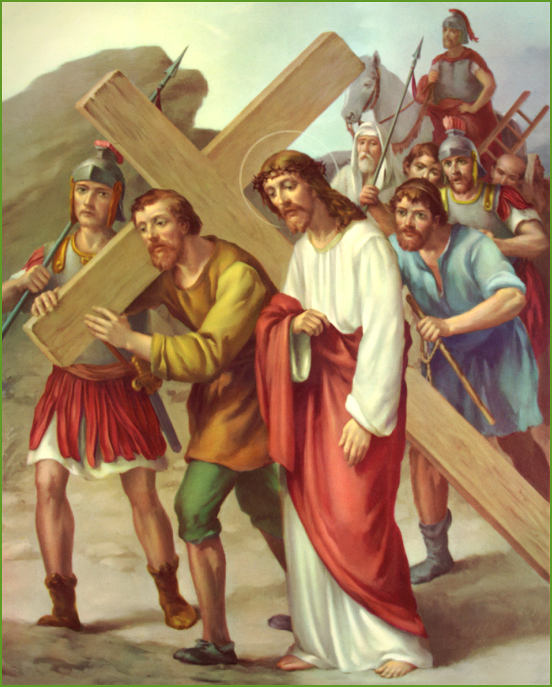Chặng Thứ Năm: Ông Simon vác cây Thánh Giá.
Khi quân dữ thấy Ðức Chúa Giêsu yếu nhọc gần chết, thì chúng bắt ông Simon vác Thánh Giá đỡ Ðức Chúa Giêsu. Thương ôi. Con chiên Chúa con đâu hết mà để Thánh giá nặng cho kẻ ngoại vác làm vậy. Xin ban ơn giúp sức cho con cùng kẻ thuộc về con được chịu mọi sự khó bằng lòng, như vác đỡ Thánh giá Ðức Chúa Giêsu vậy.
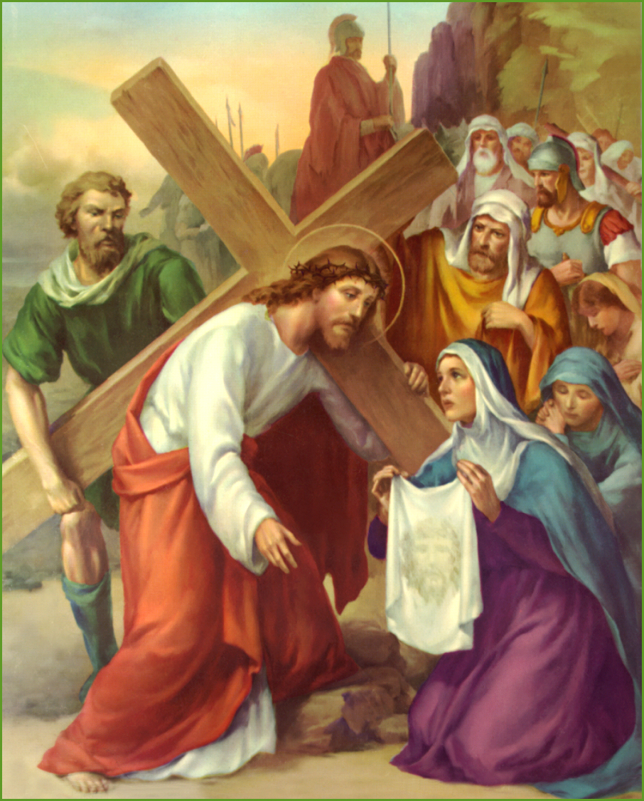Chặng Thứ Sáu:Bà Veronica trao khăn cho Ðức Chúa Giêsu
Con khen lòng can đảm của bà Veronica chẳng sợ quân dữ, một lòng mến Ðức Chúa Giêsu. Bà thấy mình và mặt Chúa máu chảy ra, thì trao khăn cho Người lau mặt. Xin in hình tượng Ðức Chúa Giêsu vào lòng con, như in vào khăn bà Veronica cho con được lòng mến Ðức Chúa Giêsu trọn vẹn trong lòng con.
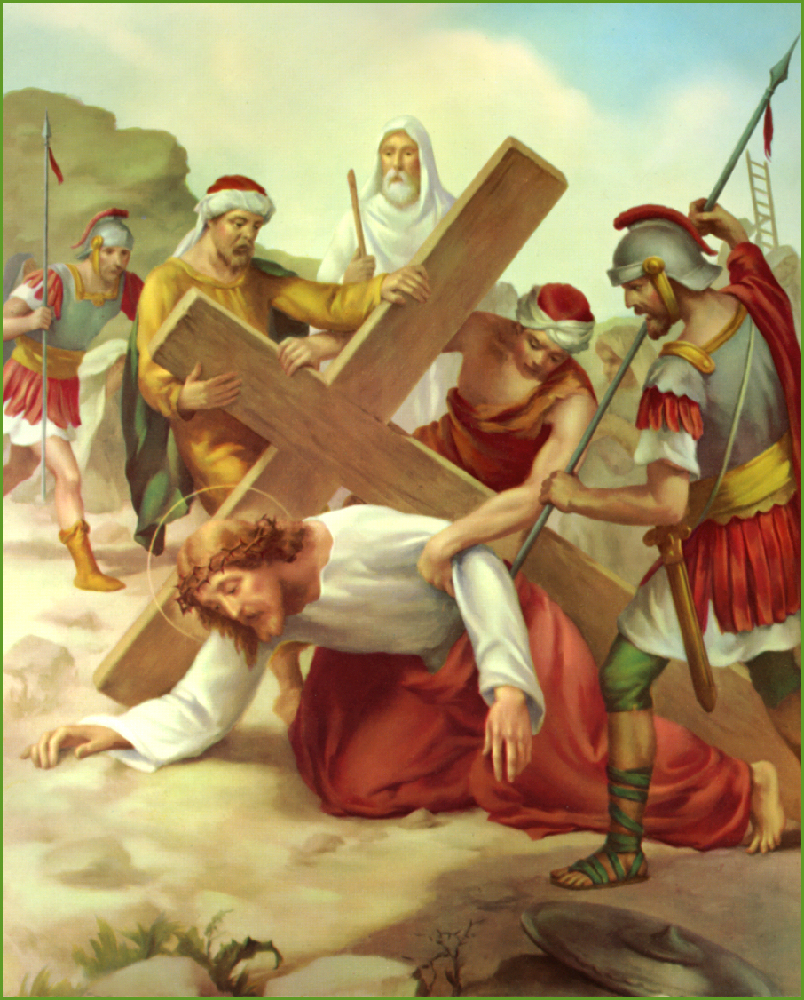Chặng Thứ Bảy: Ðức Chúa Giêsu Ngã xuống đất lần thứ hai.
Các sự khốn khó Ðức Chúa Giêsu chịu càng lúc càng tăng, gượng đi chẳng được, thì ngã xuống đất lần nữa. Quân dữ đạp dậy, giục đi cho chóng. Xin Ðức Chúa Giêsu ban ơn cho con được giữ lòng vững vàng đi đàng nhân đức một ngày một hơn.
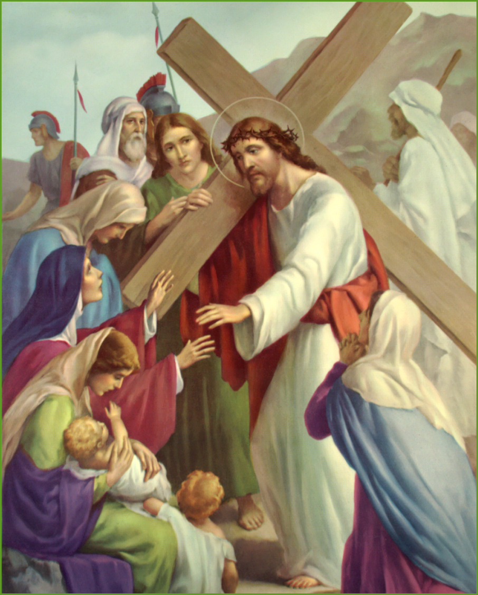Chặng Thứ Tám:Ðức Chúa Giêsu đứng lại yên ủi con thành Giêsusalem.
Lạy ơn Ðức Chúa Giêsu chịu trăm nghìn sự thương khó cho được đứng lên thì Chúa lại yên ủi con thành Giêrusalem như Cha yên ủi con trong cơn khóc lóc. Xin Ðức Chúa Giêsu yên ủi linh hồn con cùng các con chiên nước này, như yên ủi con thành Giêrusalem vậy, xin chớ bỏ rơi chúng con.
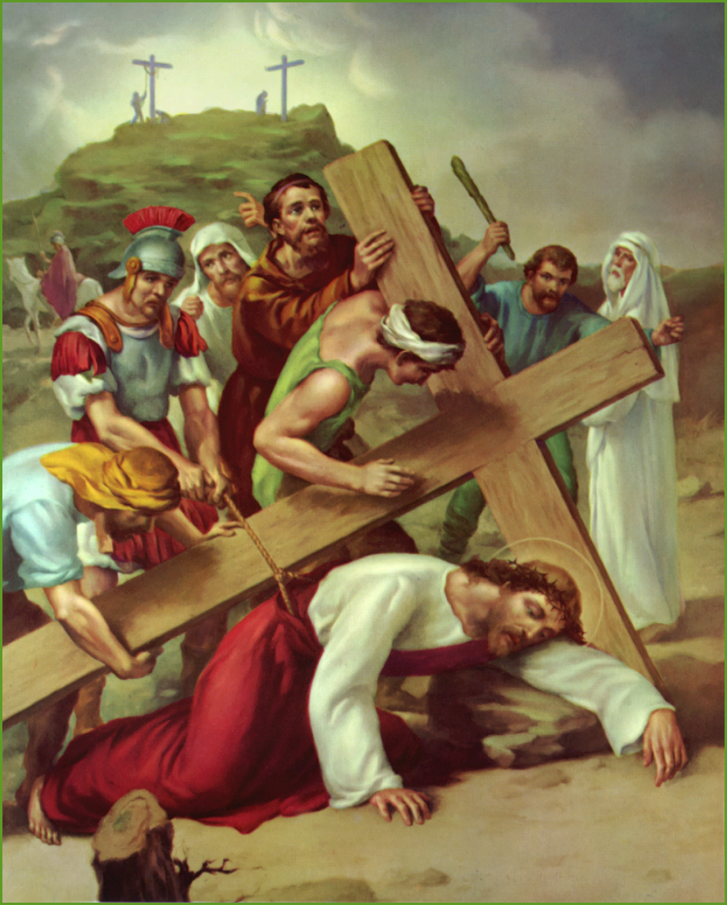Chặng Thứ Chín: Ðức Chúa Giêsu ngã xuống đất lần thức ba.
Lạy ơn Ðức Chúa Giêsu, đã gần đến núi Calavariô, chẳng còn ai nhìn, máu đã chảy ra hết thì ngã xuống đất một lần nữa. Ôi con cháu Adong, hãy xem Chúa mình ngã xuống đất nhiều lần làm vậy vì ai? Xin Ðức Chúa Giêsu thương chúng con cho đến sau hết, xin chớ bỏ chúng con vốn yếu đuối và dại dột.
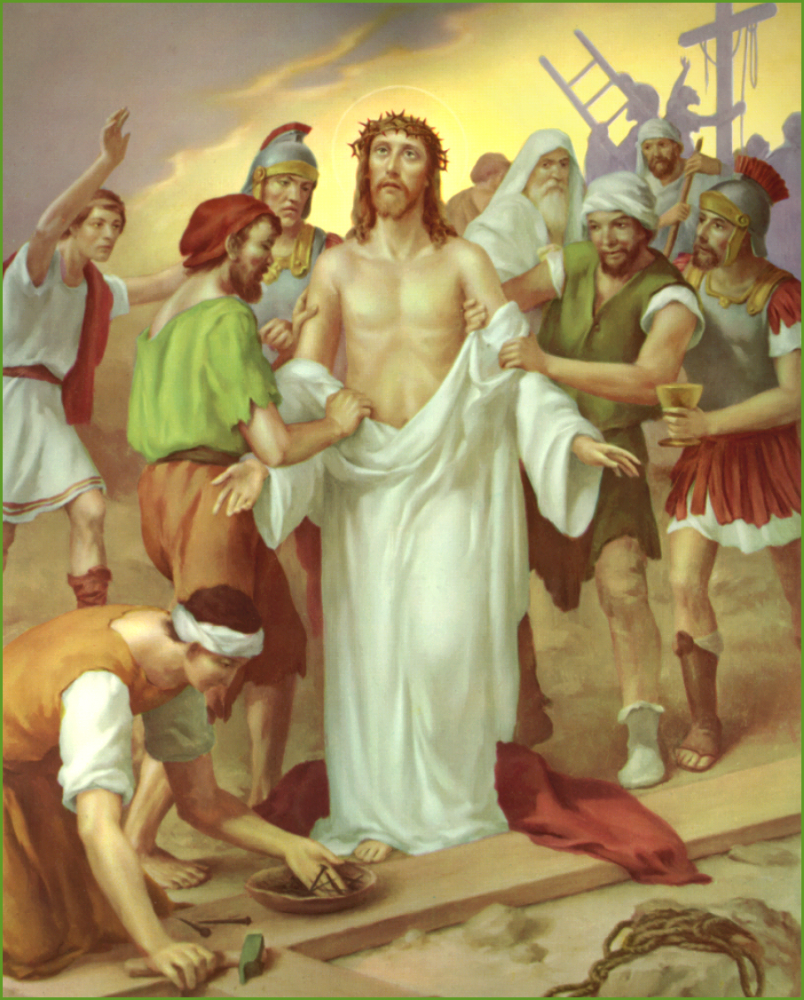Chặng Thứ Mười: Quân dữ lột áo Ðức Chúa Giêsu.
Lạy ơn Ðức Chúa Giêsu, khi quân dữ toan đóng đinh Ðức Chúa Giêsu thì nó lột áo ra hết để cho xấu hổ cùng đau đớn. Xin ban ơn cho con giũ mình cho khỏi chước ma quỉ cám dỗ.
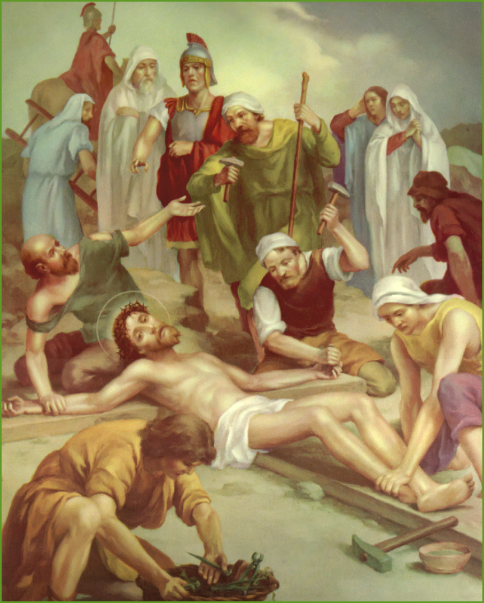Chặng Thứ Mười Một: Quân dữ đóng đinh Ðức Chúa Giêsu
Lạy ơn Ðức Chúa Giêsu chịu đóng đinh vào Thánh Giá vì tội con. Xin ban ơn cho con đóng đinh tính xác thịt con vào Thánh Giá Chúa con, kẻo còn phạm tội lỗi nữa.
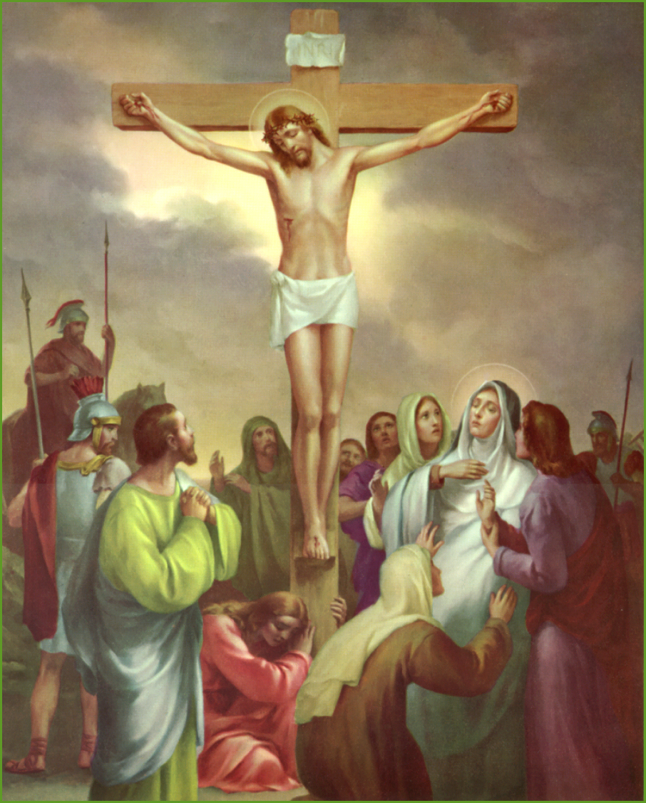Chặng Thứ Mười Hai: Ðức Chúa Giêsu sinh thì trên Thánh Giá.
Lạy ơn Ðức Chúa Giêsu chịu mọi sự khó cho đến gần hết hơi, thì gục đầu xuống giã biệt Ðức Mẹ mà ra đi. Xin ban ơn cho con giữ đạo cho đến giờ sau hết được phó linh hồn trong tay Chúa con.
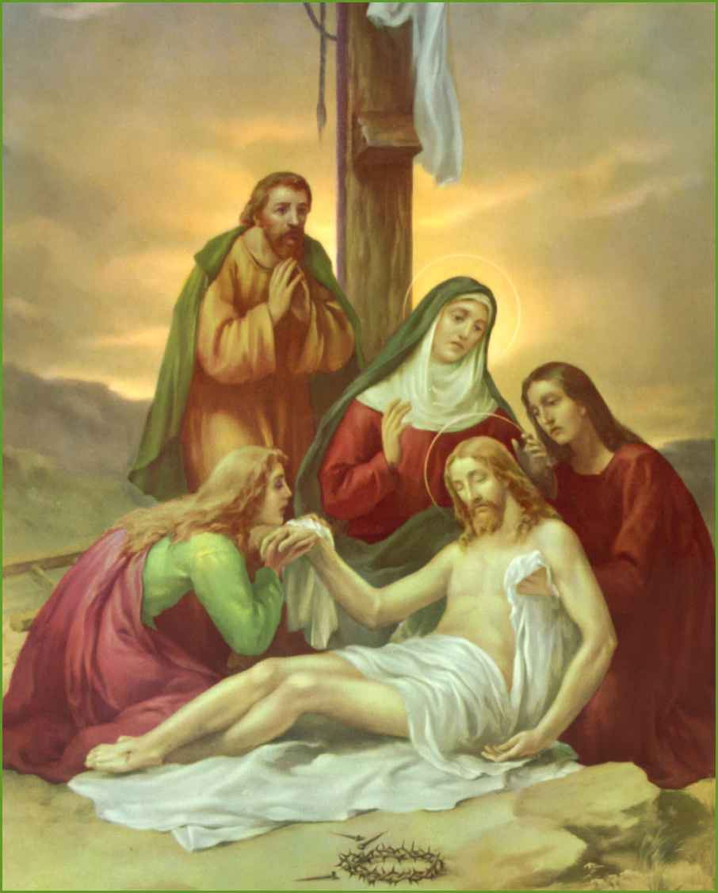Chặng Thứ Mười Ba: Tháo đanh Ðức Chúa Giêsu xuống mà phó ở tay Ðức Mẹ.
Ai xem thấy hai ông thánh tháo đinh Ðức Chúa Giêsu đem xuống, mà cầm nước mắt được sao? Xin ban ơn cho con gỡ mình cho khỏi các tội, như tháo đinh Ðức Chúa Giêsu vậy.
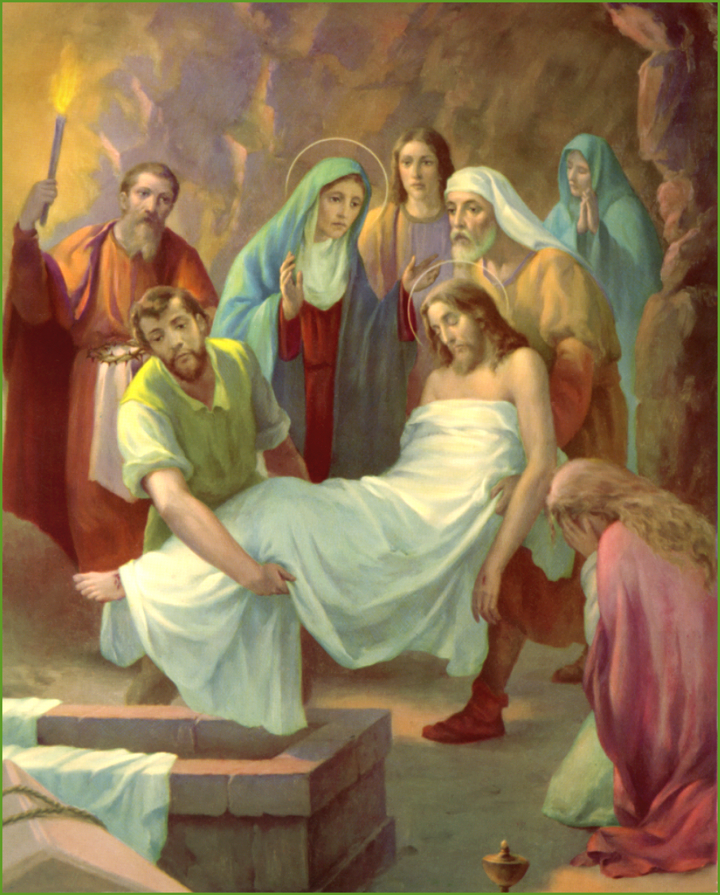 Chặng Thứ Mười Bốn: Táng xác Ðức Chúa Giêsu trong hang đá.
Ông thánh Giuse, ông thánh Nicôđêmô, ông thánh Gioan tắm xác Ðức Chúa Giêsu cho sạch các dấu, lấy thuốc thơm mà xức, lấy khăn sạch mà bọc cùng táng trong hang đá. Mọi sự khốn khó Ðức Chúa Giêsu chịu, có khi nào khó khăn thiếu thốn cho bằng khi táng xác?
Xin ban lòng mến cho con như thuốc thơm và lòng sạch sẽ như khăn sạch, cùng lòng vững vàng như hang đá và các ơn bởi sự thương khó Ðức Chúa Giêsu. Xin cho con dọn mình chịu Mình Thánh Máu Thánh Ðức Chúa Giêsu vào lòng như táng nhiệm ở đời này, cho ngày sau được xem thấy tỏ tường Ðức Chúa Giêsu hằng sống hằng trị cùng Ðức Chúa Cha, cùng Ðức Chúa Thánh Thần đời đời chẳng cùng. Amen.
Loi Nguyen Be Mac:
Chúng con lạy Dấu Thánh chân tả Đức Chúa Giêsu.
Đáp: Vì tội chúng con.
Chúng con lạy Dấu Thánh chân hữu Đức Chúa Giêsu.
Đáp: Vì tội chúng con.
Chúng con lạy Dấu Thánh tay tả Đức Chúa Giêsu.
Đáp: Vì tội chúng con.
Chúng con lạy Dấu Thánh tay hữu Đức Chúa Giêsu.
Đáp: Vì tội chúng con.
Chúng con lạy Dấu Thánh cạnh nương long Đức Chúa Giêsu.
Đáp: Vì tội chúng con. Amen